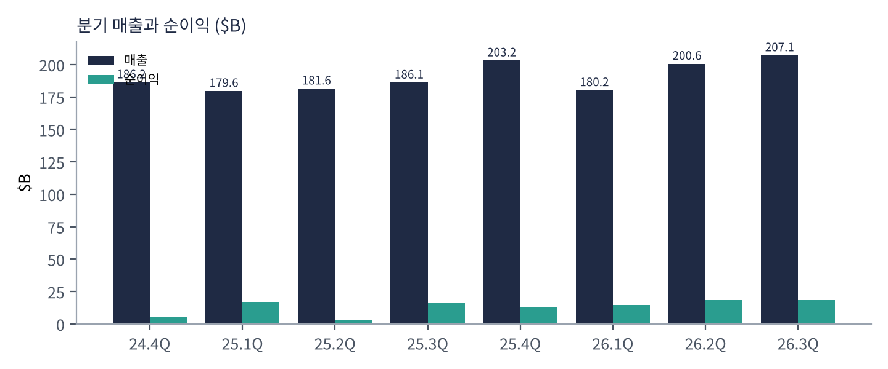
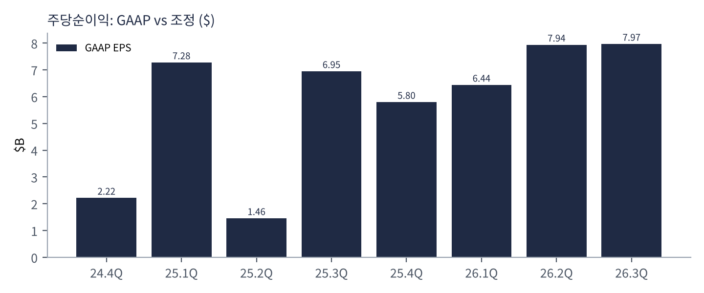
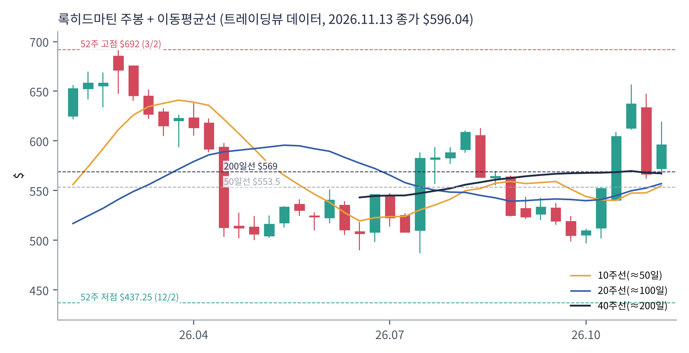
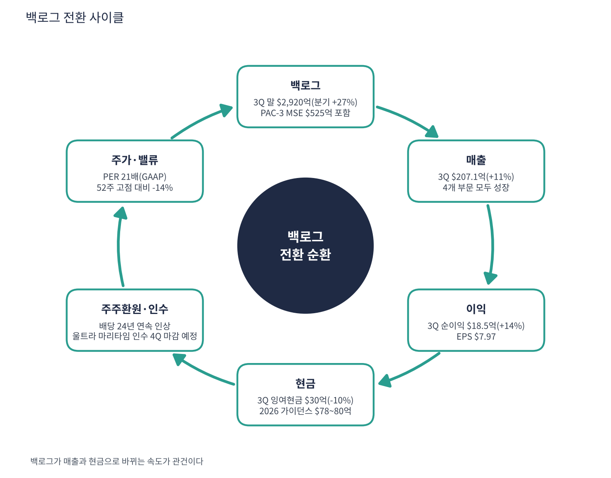

록히드마틴은 F-35 전투기, 미사일·방공(PAC-3), 헬리콥터, 우주 시스템을 만드는 미국 최대 방산업체다. 이 보고서 시점의 매출은 연 $790억 수준(TTM)이다. 백로그가 사상 최대 $2,920억(PAC-3 MSE 다년 수주 $525억 포함)이고 가이던스를 올렸지만, F-35 로트 20 자금 승인이 아직 필요한 회사다.
| 항목 | 내용 |
|---|---|
| 종목 | Lockheed Martin (LMT) · NYSE · 방산 · 본사 미국 메릴랜드주 베서스다 |
| 밸류에이션 | PER 21.2배(GAAP TTM) · P/S 1.77배 (11/13 종가 $596.04) |
| 최근 분기(3Q26) | 매출 $207.1억(+11%), 순이익 $18.5억(+14%), EPS $7.97(+15%) |
| 백로그 | $2,920억(직전 분기 대비 +27%), PAC-3 MSE 다년 수주 $525억 포함 |
| 현금·부채 | 현금 약 $60억, 총차입금 약 $205억, TTM 잉여현금 약 $84억, TTM EBITDA 약 $110억(스캐너) |
| 가이던스(2026) | 매출 $800~820억, 부문 영업이익 $85.75~86.75억, EPS $30.35~30.75, 영업현금 $100~102억, 잉여현금 $78~80억 — 상향 |
| 다음 일정 | 4Q26 실적 2027.1.26 예정(트레이딩뷰). 울트라 마리타임 인수는 4Q 마감 예정이며 가이던스에서 제외 |
| 직책 | 인물 | 역할·특징 |
|---|---|---|
| 회장·사장·CEO | 짐 테이클릿 | 플랫폼을 이어 쓰며 AI·자율화로 성능을 높이는 전략을 강조 |
경영 스타일: '기존 플랫폼을 확대하고 신기술을 붙인다'. 3Q에 4개 사업 부문이 모두 성장했고 두 분기 연속 가이던스를 올렸다. 배당은 24년 연속 인상했다. 다만 F-35 로트 20 선행 계약 비용이 현재 승인·자금을 넘기 시작해, 추가 승인이 없으면 실적과 현금에 부정적이라고 회사가 직접 밝혔다.
에이지스, F-35, 헬파이어 같은 기존 체계에 AI·자율화와 신생 기업 기술을 결합한다고 경영진이 설명했다. 극초음속과 자율 항공기도 성장 동력으로 언급됐다.
F-35 다년 계약 발표, PAC-3 MSE 다년 수주(백로그 $525억)로 생산량 확대 근거를 확보했다고 회사가 밝혔다.
다음 실적발표는 세 가지 질문에 답하는 자리다.
1. 현금이 이번 분기에 개선되나?
2. 악재 'F-35 로트 20 자금' 부담이 줄어드나?
3. 악재 '잉여현금 감소' 부담이 줄어드나?
한 줄 판정 규칙: 첫 질문의 현금이 좋아지면 약한 고리가 풀리고, 그렇지 않으면 현재 사이클의 약점이 그대로 남는다.
일정: 다음 발표일은 확인 필요(이번 분기 발표 후 일정 미확정). 위 현재값은 이 보고서의 기존 숫자다.
| 분기 | 매출 | 순이익 | EPS | 조정 EPS | 특이 사항 |
|---|---|---|---|---|---|
| 2024.4Q | $186.2억 | $5.3억 | 2.22 | – | EPS 낮음(원인 미확인) |
| 2025.1Q | $179.6억 | $17.1억 | 7.28 | – | |
| 2025.2Q | $181.6억 | $3.4억 | 1.46 | – | EPS 낮음(원인 미확인) |
| 2025.3Q | $186.1억 | $16.2억 | 6.95 | – | |
| 2025.4Q | $203.2억 | $13.4억 | 5.80 | – | |
| 2026.1Q | $180.2억 | $14.9억 | 6.44 | – | |
| 2026.2Q | $200.6억 | $18.4억 | 7.94 | – | |
| 2026.3Q | $207.1억 | $18.4억 | 7.97 | – | 백로그 $2,920억, 가이던스 상향 |
록히드마틴은 조정 EPS를 따로 발표하지 않아 트레이딩뷰 Reported가 GAAP과 같다. 조정 EPS 열은 –로 둔다.


흐름 요약: 분기 매출은 $180~207억으로 3Q26이 가장 크다. EPS는 분기마다 크게 흔들린다. 4Q24 $2.22와 2Q25 $1.46은 낮고 나머지는 $5.80~7.97이다. 낮은 분기의 원인은 이 자료에서 확인하지 못했다. 최근 세 분기는 $6.44, $7.94, $7.97로 올랐다. 영업이익과 분기 설비투자는 이 자료에서 구하지 못해 표에서 뺐다.
| 항목 | 최근 값 | 비고 |
|---|---|---|
| 백로그 | $2,920억 | PAC-3 MSE 다년 수주 $525억 포함, 직전 분기 대비 +27% |
| 우주 부문(3Q) | $34.9억 | 영업이익 $3.31억, 마진 9.5%(전년 9.9%) |
| 9개월 누적 | 매출 $587.95억 | 전년 $547.27억, 순이익 $51.7억(전년 $36.7억) |
| 영업현금(3Q) | $34.4억 | 전년 $37.3억 |
매출은 4개 부문이 함께 늘었다. 부문별 매출은 우주 부문 외에는 이 자료에서 구하지 못해 뺐다. 미사일·화력통제 부문은 탄약 증산이 영업이익을 늘렸다고 회사가 밝혔다.
록히드마틴은 '증산과 신기술 결합'으로 방향을 잡았다.
| 축 | 최근 움직임 |
|---|---|
| 방공·미사일 | PAC-3 MSE 다년 수주 $525억, 탄약 증산 |
| 항공 | F-35 다년 계약, 자율 항공기 |
| 우주 | 3Q 매출 $34.9억, 마진은 소폭 하락 |
| 인수 | 울트라 마리타임 4Q 마감 예정 |

| 이동평균 | 값 | 종가 대비 | 해석 |
|---|---|---|---|
| 5일선 | $600.30 | -0.7% | 현재가가 위 |
| 20일선 | $601.65 | -0.9% | 현재가가 아래(근접) |
| 50일선 | $553.54 | +7.7% | 현재가가 위 |
| 100일선 | $554.03 | +7.6% | 현재가가 위 |
| 200일선 | $569.00 | +4.8% | 현재가가 약 5% 위 |
주봉 흐름: 2025년 12월 저점 $437 → 2026년 3월 고점 $692 → 4~9월 $500대 횡보 → 10월 말 $657 → 11월 둘째 주 $567로 급락 후 $596 회복. 50일선($553.5)이 200일선($569) 아래에 있어 장기 배열은 아직 약하다.
| 규칙 | 기준 | 현재 값 | 신호 |
|---|---|---|---|
| 장기 추세 필터 | 종가 vs 200일선 | $596.04 > $569.00 | 매수 |
| 중장기 교차 | 50일선 vs 200일선 | $553.54 < $569.00 | 매도 |
| 단기 교차 | 20일선 vs 50일선 | $601.65 > $553.54 | 매수 |
| 돈키언 채널 | 55일 고가 $657.00 / 저가 $497.00 | 중간값 $577.00 위 | 매수 |
| 1개월 모멘텀 | 21거래일 수익률 | +11.9% (기준 $532.64) | 매수 |
| 3개월 모멘텀 | 63거래일 수익률 | +0.4% (기준 $593.74) | 매수 |
| 6개월 모멘텀 | 126거래일 수익률 | +15.5% (기준 $516.01) | 매수 |
| 12개월 모멘텀 | 252거래일 수익률 | +30.4% (기준 $457.04) | 매수 |
| 종합 (8개 평균) | +0.75 | 강한 매수 |
해석: 8개 신호 중 7개가 매수, 50/200 하나가 매도다(점수 +0.75, 강한 매수 기준 선상). 3개월 기준가($593.7)가 현재가 $596.0에 붙어 있어 사소한 하락에도 신호 하나가 바뀐다. 14일 ATR $20.18 (3.4%).
| 가격 | 무엇이 바뀌나 | 의미 |
|---|---|---|
| $593.7 이탈 | 3개월 기준가 | 3개월 모멘텀 매수 → 매도 |
| $577 이탈 | 돈키언 중간값 | 55일 채널 매수 → 매도 |
| $569 이탈 | 200일선 | 장기 추세 필터 매수 → 매도 |
| 구분 | 가격대 | 근거 |
|---|---|---|
| 저항 2 | $692 | 52주 고점(3/2) |
| 저항 1 | $657 | 55일 고점 |
| 지지 1 | $569 ~ 594 | 200일선 $569, 3개월 기준가 $593.7 |
| 지지 2 | $553 ~ 554 | 50일선·100일선 |
신호 점수는 높지만 3개월 기준가에 붙어 있다. 200일선 부근($570~590) 눌림 때 계획 비중의 30%만 진입하고 50일선($553) 종가 이탈 시 손절한다. 1차 목표 $657은 55일 고점, 2차 $692는 52주 고점(+16%)이다. 조건은 F-35 로트 20 자금 승인 소식과 1/26 실적이다.
| 악재 요인 | 내용 | 강도 |
|---|---|---|
| F-35 로트 20 자금 | 선행 계약 비용이 승인 한도를 넘기 시작, 추가 승인 없으면 실적 악화 | 높음 |
| 잉여현금 감소 | 3Q 잉여현금 -10% | 중간 |
| EPS 변동성 | 분기 EPS가 $1.46~7.97로 큼, 원인은 확인 못함 | 중간 |
| 인수 비용 | 울트라 마리타임 인수 현금 사용 | 낮음~중간 |
| 티커 | 회사 | PER(TTM) | PEG | P/S | EPS 성장(YoY) |
|---|---|---|---|---|---|
| LMT | 록히드마틴 | 21.2배 | – | 1.77배 | +57% |
| RTX | RTX | 26.5배 | 1.37 | 2.83배 | +19% |
| GE | GE 에어로스페이스 | 43.1배 | 1.68 | 6.55배 | +26% |
| TDG | 트랜스다임 | 34.2배 | – | 6.46배 | +11% |
| AXON | 액슨 | 42.9배 | 5.00 | 7.52배 | +9% |
LMT·TDG는 트레이딩뷰 GAAP TTM, RTX·GE·AXON은 조정 EPS 기준(내 계산)이다. LMT의 +57.1%는 직전 TTM의 낮은 분기 때문에 부풀어 PEG를 쓰지 않았다.
비교 결론: LMT는 동종 중 PER·P/S가 가장 낮다. 낮은 배수는 F-35 자금 승인 위험과 EPS 변동성을 반영한 것으로 본다(내 판단).
LMT는 잉여현금이 안정적이지만 3Q에는 줄었다. 현금 약 $60억, 총차입금 약 $205억이다.
| 지표 | 값 | 계산·출처 | 해석 |
|---|---|---|---|
| 현금 등 | 약 $60억 | 스캐너 | |
| 총차입금 | 약 $205억 | 스캐너 | 순부채 약 $145억 |
| TTM 잉여현금흐름 | 약 $84억 | 스캐너 | – |
| TTM EBITDA | 약 $110억 | 스캐너 | 순부채/EBITDA 약 1.3배 |
| 기준 | 값 | 비고 |
|---|---|---|
| P/S (TTM) | 1.77배 | TTM 매출 약 $791억(내 계산) |
| P/FCF | 약 16.4배 | 잉여현금 $84억(내 계산). 2026 가이던스 중간 $79억 기준 약 17.4배 |
| 동종 | RTX 2.8, GE 6.6, 트랜스다임 6.5 | 11/13 스캐너 |
해석: 3Q 잉여현금은 $30억으로 전년 $33억보다 줄었는데, 회사는 전년 고객 수금이 컸던 영향이라고 밝혔다. 스트레스 가정: P/FCF 14배면 약 $479 (-20%), 17배면 약 $581 (-3%), 20배면 약 $683 (+15%)이다(내 가정, 가이던스 중간 $79억 기준).
| 지표 | 값 | 판정 |
|---|---|---|
| PER (GAAP TTM) | 21.2배 | 트레이딩뷰, 조정 EPS 없음 |
| PER (2026 가이던스 중간 $30.55) | 약 19.5배 | 내 계산 |
| EV / EBITDA | 약 13.8배 | EV(차입금 $205억 − 현금 $60억 반영),522억, ÷ $110억 |
| 방식 | PER | EPS 성장률 | PEG | 판정 |
|---|---|---|---|---|
| 트레이딩뷰 (GAAP TTM) | 21.2배 | +57.1% | 산출 불가 | 직전 TTM(4Q24~3Q25 EPS 합 $17.91)에 낮은 분기가 있어 성장률이 왜곡됨 |
| 참고: 단순 계산 | 21.2배 | +57.1% | 약 0.37 | 기저 효과로 낮게 나오므로 판정에 쓰지 않음(내 계산) |
| 2026 가이던스 중간 $30.55 ÷ 2025년 EPS 합 $21.49 | 19.5배 | +42.2% | 약 0.46 | 2025년도 낮은 분기를 포함해 왜곡(내 계산) |
판정: PEG는 산출 불가(왜곡). 성장률이 낮은 기저 위에서 계산돼 0.4대로 나오지만 신뢰할 수 없다. 실적이 정상 분기($6~8) 수준에 안착하면 EPS 성장은 한 자릿수라고 보는 편이 맞다(내 판단).

LMT의 사이클은 백로그 → 매출 → 이익 → 현금 → 인수·환원이다. 약한 고리는 F-35 자금 승인과 현금 전환이다.
| 고리 | 현재 숫자 | 고리 강도 | 약해지는 신호 |
|---|---|---|---|
| ① 백로그 | $2,920억(+27% 분기) | 강함 | 수주 취소·지연 |
| ② 매출 | $207.1억(+11%) | 강함 | 공급망 지연 |
| ③ 이익 | 순이익 +14%, EPS $7.97 | 강함 | 고정가 계약 비용 초과 |
| ④ 현금 | 3Q 잉여현금 -10% | 변동 | 수금 시차 |
| ⑤ F-35 승인 | 로트 20 선행 비용이 승인 초과 | 위험 | 추가 승인·자금 지연 |
구조: 강한 고리는 ①②③이고 ④⑤가 약하다. 백로그는 크지만 F-35 자금 승인과 현금 전환이 확인 지점이다.